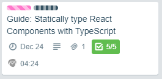

I'm a technologist, speaker, and Pluralsight author and I specialize in building full-stack solutions with a focus on modern web technology and cloud native architecture.
I just published my first Pluralsight guide: How to Statically Type React Components with TypeScript. I cover the basics of how to annotate React components, props, state, and events with TypeScript. Go ahead and check it out!
As you may know if you follow me on social media, baby #2 dropped in November so I'm taking a good amount of time before I commit to a big contract like doing two Pluralsight courses at once. That was well worth it but quite a feat.
Still--I'm not one to sit around long and evenings are still protected time. One thing I love about doing Pluralsight work is that they have a myriad of opportunities besides just doing video courses. One of them is assessments, which I did a few months back, by writing questions for the JavaScript ES6 assessment (I worked with 2 other authors on that). Another recent opportunity has been Guides which are in their infancy. I imagine the team has big plans for that section of the site.
I reached out to my ASM last week and said I'd be interested in some low-key work and guides came up as a good activity, so I took a look and lo and behold I had struck some gold. It turns out, they need some guides around using React with TypeScript.
And you know what I think about that. I like it a lot.
So I offered to start with the first objective I thought I could tackle. It took me about 4 hours and that included planning and rewriting it once to adhere to the standards/guidelines. I think next time I'll be able to get it down to 2-3 hours. I'm always willing to try these opportunities 2-3 times before deciding if they're worth the investment. The time tracking I started doing for the last courses helps immensely!

Looking forward to the next guide, which I'll pick up next week hopefully!
About Kamran